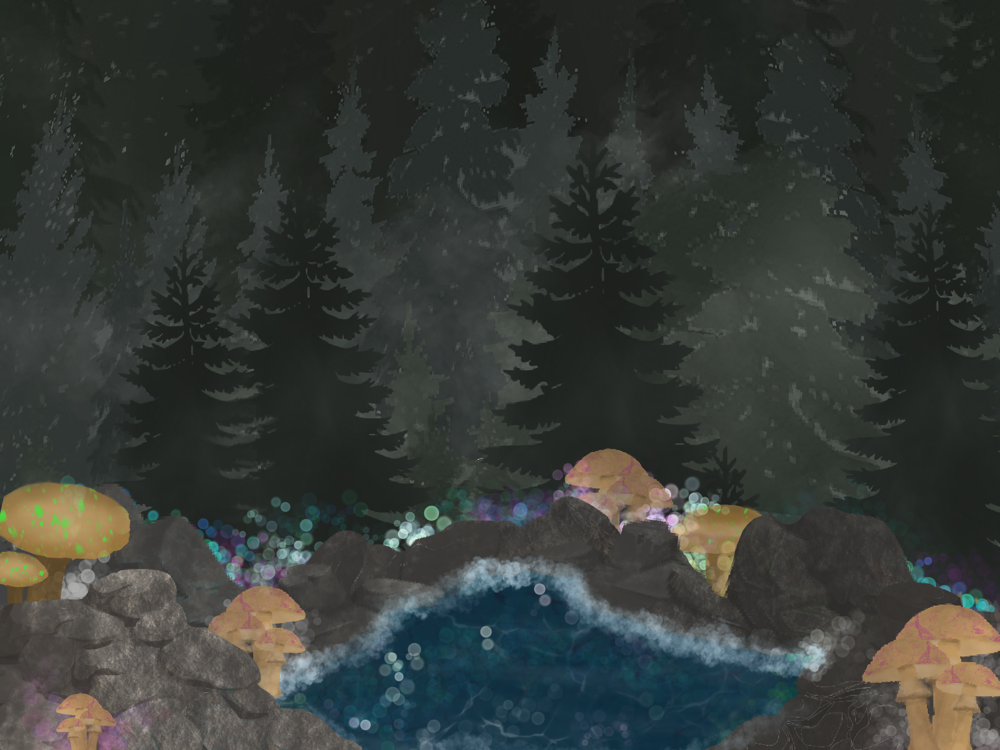
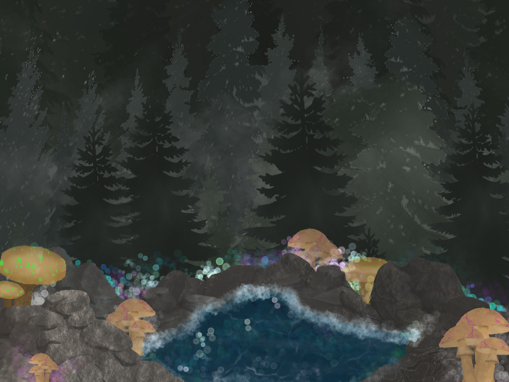

He was becoming sick and tired of this forest.
Tediously walking in and out and in and out, night after night.
There are only so many different trees to look at.
Although, maybe he was just becoming sick of everything.
He couldn't remember the last time he'd smiled.
He had no reason to.
But hey, he had nothing better to do, so he walked in again, with little to no enthusiasm...
 
